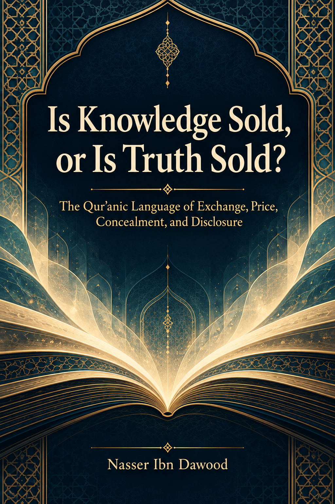

121. Is Knowledge Sold, or Is Truth Sold? — The Qur’anic Language of Exchange, Price, Concealment, and Disclosure

An inquiry into exchange, price, concealment, the reward of proclamation, and publishing ethics. It distinguishes revelation from human scholarship and tests generalizations against counter-evidence. Contract and access models remain operational proposals, not explicit Qur’anic legislation. Condensed English adaptation.
This is a condensed conceptual English edition, not a complete word-for-word translation. The Arabic text remains the primary source for detailed analysis and references.
قراءة PDF داخل الموقع / Read the PDF on this website
جارٍ تجهيز القارئ… / Preparing the reader…
Book Summary, Table of Contents & Excerpt
IS KNOWLEDGE SOLD,
OR IS TRUTH SOLD?
The Qur’anic Language of Exchange, Price, Concealment, and Disclosure
A condensed conceptual adaptation of the Arabic study
NASSER IBN DAWOOD
QCROS: contextual inquiry, corpus review, and reverse testing
Conceptual English edition • 2026
Contents
● I. The Global Knowledge Manifesto
● II. Translator’s Note: The Bridge of Meaning
● A Note on Evidence and Status Labels
● 1. The Question: What Is Being Sold?
● 2. Read the Whole Relation, Not One Word
● 3. Buying, Price, and the Moral Exchange
● 4. Concealment, Disclosure, and Verification
● 5. Prophetic Proclamation and Human Work
● 6. Authorship, Access, and Researchers’ Rights
● 7. Is There a Religious Profession?
● 8. Writing as Peaceful Intellectual Struggle
● 9. A Practical Review of a Publishing Agreement
● Conclusion: A Bounded Finding
● Selected References
● Compact Glossary
This contents page lists sections; it is not a page-number index.
I. The Global Knowledge Manifesto
Knowledge is a universal right. The author firmly believes that wisdom should not be locked behind paywalls or language barriers.
Global Access Policy: All books in this library are available for free in multiple digital formats (PDF, HTML, DOCX, TXT).
The Digital Library: As of early 2026, the collection hosts 236 volumes (118 in Arabic and 118 in English), fully optimized for AI-assisted research and digital archiving.
Official Platforms: Main Website: nasserhabitat.github.io/nasser-books/
GitHub: nasserhabitat/nasser-books
This manifesto is reproduced here as supplied by the author for this condensed edition.
Editorial note: The collection figures and platform description above are author-supplied statements reproduced for this edition; this adaptation does not independently audit them.
II. Translator’s Note: The Bridge of Meaning
This English edition is a condensed conceptual adaptation. It is not a word-for-word translation, but rather an “extraction of essence.” It presents the core philosophical framework in accessible English, omitting the exhaustive linguistic debates and classical references found in the original Arabic text.
For the academic researcher: The original Arabic version remains the primary source for comprehensive linguistic analysis, detailed exegesis (tafsir), and the complete bibliography.
This adaptation also preserves the methodological status of the Arabic edition. A claim marked OPEN remains open; a CANDIDATE remains a candidate; a RESISTED or STRONGLY RESISTED claim is not revived through simplification; and a CLOSED result remains closed only within its declared scope. The aim is clarity without scientific inflation.
Key Qur’anic terms may be retained in transliteration—such as nafs, tawaffī, barzakh, and baʿth—when a single English equivalent would prematurely narrow the field under study. These are examples of the wider method, not all central topics in this book.
A Note on Evidence and Status Labels
The book separates four layers: (1) Qur’anic text; (2) direct observation about wording and context; (3) the researcher’s inference, hypothesis, or operational model; and (4) a modern legal, institutional, or contractual application. Similarity between two layers does not by itself prove that a ruling transfers from one to the other.